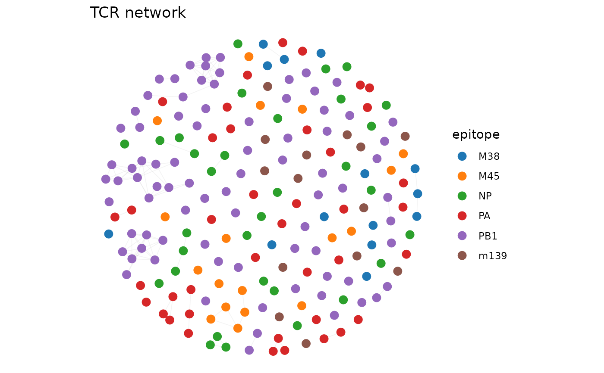

Draws a network graph of TCR clones with ggplot2, using layout coordinates
from compute_tcr_network. Vertices are colored by a metadata
variable (e.g. epitope, cluster) and edges are drawn as semi-transparent
segments.
Usage
plot_tcr_network(
network,
color_by = NULL,
vertex_size = 3,
edge_alpha = 0.15,
edge_width = 0.3,
title = NULL,
palette = NULL,
legend_title = NULL,
show_labels = FALSE,
label_size = 3,
na_color = "#DDDDDD"
)Arguments
- network
List returned by
compute_tcr_network.- color_by
Character string naming a vertex attribute, OR a vector of length N. If a single string matching a vertex attribute name, that attribute is used. If
NULL, all vertices are gray.- vertex_size
Numeric. Point size. Default
3.- edge_alpha
Numeric. Edge transparency. Default
0.15.- edge_width
Numeric. Edge line width. Default
0.3.- title
Optional plot title.
- palette
Character vector of colors to override the default palette.
- legend_title
Optional legend title.
- show_labels
Logical. If
TRUEand coloring is categorical, add centroid labels. DefaultFALSE.- label_size
Numeric. Label text size. Default
3.- na_color
Character. Color for NA values. Default
"#DDDDDD".
Examples
# \donttest{
data(dash)
sub <- dash[1:200, ]
net <- compute_tcr_network(sub, "mouse", threshold = 48, seed = 42)

plot_tcr_network(net, color_by = "epitope", title = "TCR network")
 # }
# }